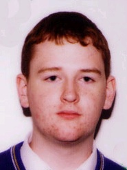
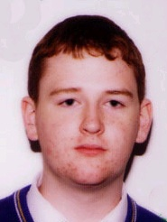

The OCaml Compiler
 We are working on maintaining and extending the core OCaml compiler toolchain
and runtime. This consists of a variety of day-to-day tasks such as submitting
bug fixes, and also longer-term improvements to the type system and runtime
libraries (see below).
We are working on maintaining and extending the core OCaml compiler toolchain
and runtime. This consists of a variety of day-to-day tasks such as submitting
bug fixes, and also longer-term improvements to the type system and runtime
libraries (see below).
We are actively engaging with the wider OCaml community to ensure that any
improvements and modifications we propose are thoroughly discussed,
well-formulated and maintainable.
Team


 


Tasks
Multicore
In Progress by KC Sivaramakrishnan (Mar 2013 - Apr 2015)
Github Paper Video
Adding shared-memory parallelism to an existing language
presents an interesting set of challenges. As
well as the difficulties of memory management in a
parallel setting, we must maintain as much backwards
compatibility as practicable. This includes not just
compatibility of the language semantics, but also of
the performance profile, memory usage and C bindings.
In the case of OCaml, users have come to rely
on certain operations being cheap, and OCaml’s C
API exposes quite a lot of internals.
The biggest challenge is implementing the garbage
collector. GC in OCaml is interesting because of pervasive
immutability. Many objects are immutable,
which simplifies some aspects of a parallel GC but
requires the GC to sustain a very high allocation rate.
Operations on immutable objects are very fast in
OCaml: allocation is by bumping a pointer, initialising
writes (the only ones) are done with no barriers,
and reads require no barriers. Our design is focussed
on keeping these operations as fast as they are at the
moment, with some compromises for mutable objects.
A previous design by Doligez et al. for Caml
Light was based on many thread-private heaps and
a single shared heap. It maintains the invariant that
there are no pointers from the shared to the private
heaps. Thus, storing a pointer to a private object
into the shared heap causes the private object and
all objects reachable from it to be promoted to the
shared heap en masse. Unfortunately this eagerly
promotes many objects that were never really shared:
just because an object is pointed to by a shared object
does not mean another thread is actually going to
attempt to access it.
Our design is similar but lazier, along the lines of
the multicore Haskell work, where objects are promoted
to the shared heap whenever another thread
actually tries to access them. This has a slower sharing
operation, since it requires synchronisation of two
different threads, but it is performed less often.
Please see the OCaml 2014 short paper linked above
for more details.
In Progress by Mark Shinwell (Jan 2013 - Apr 2015)
4.00.1-allocation-profiling Video
Debuggers such as the GNU debugger gdb are
valuable tools when tracking down problems in low-level or parallel
applications. The programmer experience when using such a debugger to examine
natively-compiled OCaml programs currently lacks lustre. Recent versions of
the compiler can emit a limited amount of debugging information which enables
the recovery of correct stack traces in the debugger. However names of
functions still appear in mangled form, it is not possible to reference local
variables by name, and traversal of OCaml values is troublesome. This is
unfortunately by no means an exhaustive list of deficiencies.
This project aims to equip the native-code OCaml compiler and the GNU debugger
with the necessary infrastructure to improve debugging of OCaml programs. The
compiler will be enhanced to emit the standard DWARF debugging information
format in order to describe the naming and placement of data together with
relevant type information. At the same time the debugger will gain
functionality to understand the OCaml-specific parts of this information
including the ability to demangle OCaml names. It is planned to implement much
of the DWARF output stage in the compiler and the debugger-side support in
libraries such that they might be re-used in other projects.
It is hoped that, as support for native-code debugging of OCaml programs in the
traditional manner evolves, it will become more easily possible to build more
advanced debugging tools. These might exploit the scripting capabilities of
gdb, for example, and target environments such as large-scale concurrent
systems.
This work is ongoing in the dwarf
branch of the OCaml repository.
Modular Implicits prototype
Complete by Leo White (Jan 2014 - Feb 2015)
Github Demo Paper Video
A common criticism of OCaml is its lack of support for ad-hoc polymorphism. The
classic example of this is OCaml’s separate addition operators for integers
(+) and floating-point numbers (+.). Another example is the need for
type-specific printing functions (print_int, print_string, etc.) rather
than a single print function which works across multiple types.
Taking inspiration from Scala’s
implicits
and "Modular Type
Classes", we propose
a system for ad-hoc polymorphism in OCaml based on using modules as
type-directed implicit parameters. You can try out an interactive REPL
of a prototype implementation online.
Namespaces and module aliases
Complete by Leo White (Feb 2013 - Sep 2014)
Blog Epic Mail Thread Paper Video
Namespaces provide a means for grouping the components of a library
together.
Up to now this has been achieved using the OCaml module system. Since
the components of an OCaml library are modules, a module can be created that
contains all the components of the library as sub-modules. However, there are
some critical problems with creating a single module containing the whole
library:
The module is a single unit that has to be linked or not as a whole. This
means that any program using part of the library must include the entire
library.
The module is a choke-point in the dependency graph. If a file depends
on one thing in the library then it needs to be recompiled if anything
in the library changes.
Opening a very large module is slow and can seriously affect build
performance.
These problems are caused by the runtime semantics of modules. Namespaces have
no runtime sematics and could provide a solution to these problems.
While the namespaces feature continues to be refined, support for type-level
module aliases was added to the OCaml 4.02 compiler. This is a trivial
extension of the ML module system that helps to avoid unnecessary code
dependencies, and provides an alternative to strengthening for type equalities.
Higher kinded polymorphism
Complete by Jeremy Yallop (Jun 2013 - Aug 2014)
Paper Github
Higher-kinded polymorphism (i.e. abstraction over type constructors) is an
essential component of many functional programming techniques such as monads,
folds, and embedded DSLs. ML-family languages typically support a form of
abstraction over type constructors using functors, but the separation between
the core language and the module language leads to awkwardness as functors
proliferate.
The higher library show how to express higher-kinded polymorphism in OCaml
without functors, using an abstract type app to represent type application,
and opaque brands to denote abstractable type constructors. The flexibility of
our approach can be seen by using it to translate a variety of standard
higher-kinded programs into functor-free OCaml code. Read more about this in
the FLOPS 2014 paper linked above.
Exception matches
Complete by Jeremy Yallop (Nov 2013 - Jun 2014)
Blog Post Bug report
OCaml's try construct is good at dealing with exceptions, but not so good at
handling the case where no exception is raised. This feature (now part of
OCaml 4.02.0) implements a simple extension to try that adds support for
handling the "success" case.
The try construct in current OCaml supports matching against raised
exceptions but not against the value produced when no exception is raised.
Contrariwise, the match construct supports matching against the value
produced when no exception is raised, but does not support matching against
raised exceptions. As implemented, the patch addresses this asymmetry,
extending match with clauses that specify the "failure continuation":
match expr
with pattern_1 -> expr_1
| ...
| pattern_n -> expr_n
| exception pattern_1' -> expr_1'
| ...
| exception pattern_n' -> expr_n'
With this additional extension the choice between match and try becomes
purely stylistic. We might optimise for succinctness, and use try in the case
where exceptions are expected (for example, where they're used for control
flow), reserving match for the case where exceptions are truly exceptional.
Open types
Complete by Leo White (Oct 2012 - May 2014)
Github Website Bug report
Add open extensible types to OCaml. One open type already exists
within OCaml: the exn type used for exceptions. This project extends
this mechanism to allow the programmer to create their own open types.
This has previously been proposed for functional languages a number of
times, for instance as part of a solution to the expression problem
(Loh et al. "Open Data Types and Open Functions").
Unlike "exn", these extensible types can have type parameters, allowing
for extensible GADTs.
For example:
type foo = ..
type foo += A
type foo += B of int
let is_a x =
match x with
A -> true
| _ -> false
This feature was merged upstream into OCaml 4.02 and is now available
as standard. To try it with OPAM if you have an older system compiler,
just do opam switch 4.02.1.
OCaml Java
Complete by Xavier Clerc (Apr 2013 - Aug 2013)
Homepage
OCaml Java is a compiler from OCaml source code to Java bytecode, that can run
on any modern Java runtime. This is an interesting way to explore the multicore
runtime performance of OCaml with a highly concurrent collector, as is present
in the latest JVMs.
The goal of this work is to stabilise and release the preview of 2.0,
which greatly improves CPU utilisation and memory footprint.
Syntax extensions
Complete by Leo White (Dec 2012 - Jun 2013)
Working group Blog (part 1) Blog (part 2)
Since its creation camlp4 has proven to be a very useful tool. People
have used it to experiment with new features for OCaml and to provide
interesting meta-programming facilities. However, there is general
agreement that camlp4 is too powerful and complex for the applications
that it is most commonly used for, and there is a growing movement to
provide a simpler alternative.
A working group was formed (wg-camlp4@lists.ocaml.org) regarding the
future of syntax extensions in OCaml. The aim of the working group is
to formulate a solid transition plan to create a 'basic OCaml
ecosystem' that does not require camlp4. Alain Frisch's introductory
email has more detail and can be
found in the archive.
Record disambiguation
Complete by Leo White (Sep 2012 - Feb 2013)
Bug report
Type-based record disambiguation: Leo helped with the
record-disambiguation branch of OCaml by Jacques Garrigue. This branch uses
type-information to disambiguate between record labels and variant constructors
with the same names. For discussions of the semantics of this feature see
Gabriel's
or
Alain's
blog posts. Leo rewrote the record-disambiguation branch to use an alternative
semantics and improved the error messages. The branch has since been merged
into OCaml
trunk